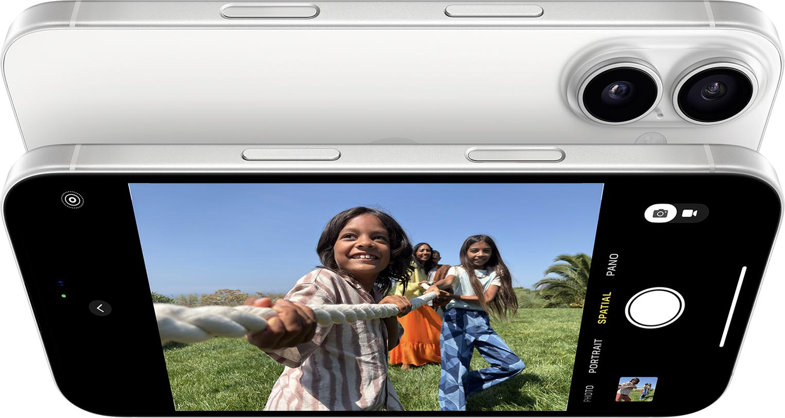
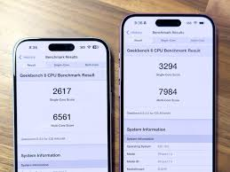
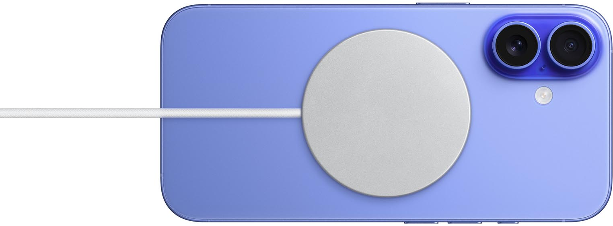
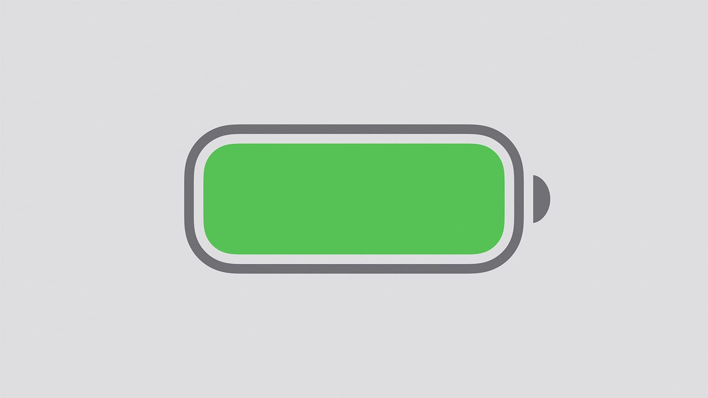

iPhone 16
Caméra : Caméra principale de 48 MP avec un capteur plus grand pour de meilleures photos en basse lumière et un mode portrait amélioré.
Processeur : Puce A18 avec architecture avancée pour des performances de pointe. Capacité d'exécuter plusieurs applications en parallèle sans aucune baisse de performance.
Batterie : Autonomie de 22 heures avec une gestion de l'énergie optimisée par la puce A18.
Écran : Écran OLED de 6,7 pouces avec une luminosité maximale de 1000 nits et une résolution de 2778 x 1284 pixels.
Stockage : Options de 128 Go, 256 Go, et 512 Go.
iPhone 15
Processeur : Puce A16 Bionic, bien performante mais légèrement moins rapide que la A18 de l’iPhone 16.
Caméra : Caméra principale de 12 MP avec un mode nuit, mais avec moins de capacité en basse lumière comparé à l’iPhone 16.
Batterie : Autonomie de 18 heures.
Écran : Écran OLED de 6,1 pouces avec une luminosité maximale de 800 nits.
Stockage : Options de 128 Go, 256 Go.
Tableau comparatif des spécifications
| Caractéristique | iPhone 16 | iPhone 15 |
|---|---|---|
| Processeur | A18 | A16 |
| Caméra | 48 MP | 12 MP |
| Autonomie | 22 heures | 18 heures |
| Écran | 6,7 pouces OLED | 6,1 pouces OLED |
| Stockage | 128 Go, 256 Go, 512 Go | 128 Go, 256 Go |